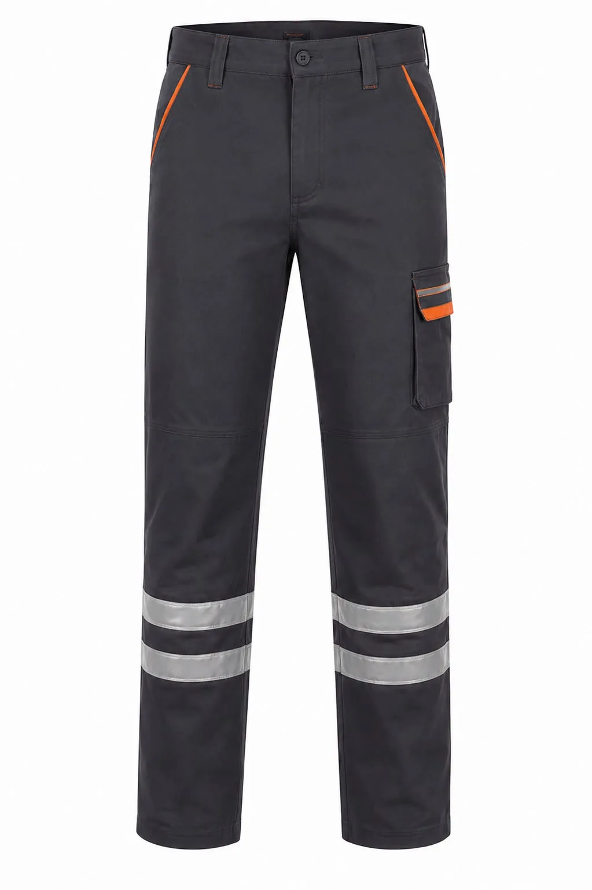
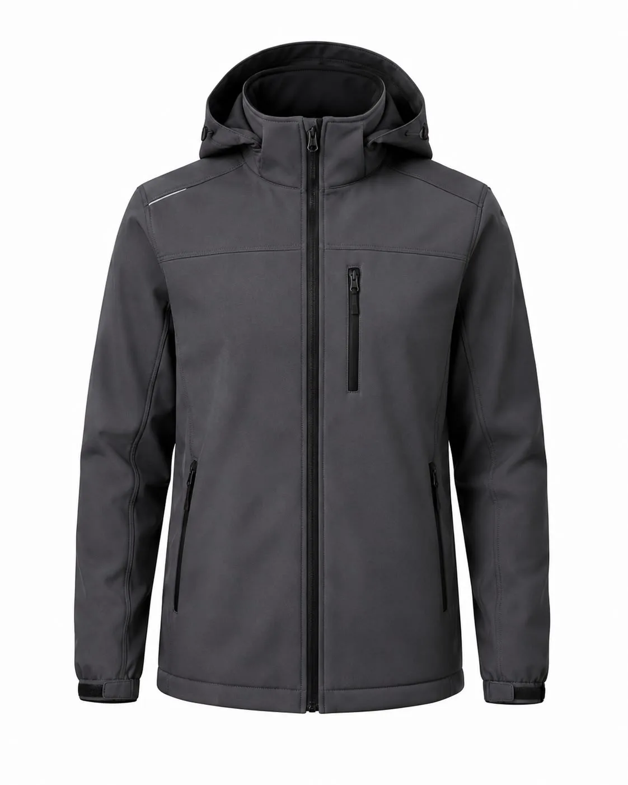
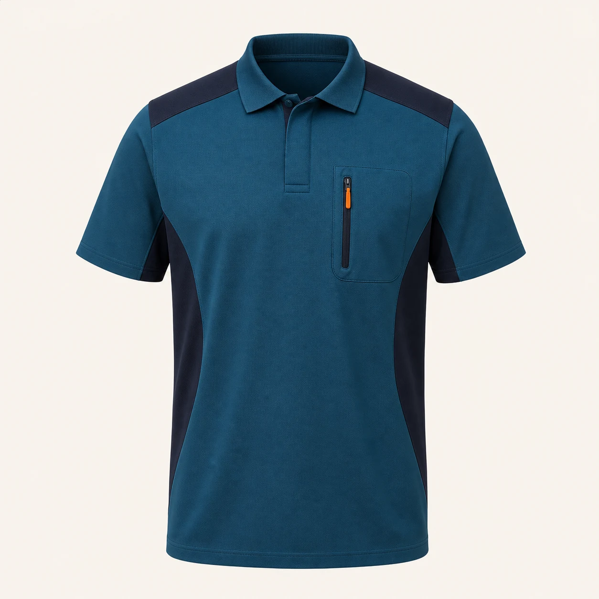

Dokuma kumaşlar
Pamuk-polyester karışımları; dayanım, nefes alma, bakım sıklığı ve ortam sıcaklığına göre farklı gramajlarda değerlendirilir.
Kardeşler Tekstil, üretim hattı, bakım, kalite, depo ve sevkiyat ekipleri için çalışma koşullarına ve kurumsal kimliğe uygun iş kıyafetleri üretir. Minimum özel üretim siparişi 50 adettir; Pendik / İstanbul'dan Türkiye geneline teslimat yapılır.
Tek bir standart kıyafeti bütün fabrikaya dağıtmak yerine görevler ayrıştırılır. Makine çevresinde takılma riski, bakım ekibinde diz çökme ve alet taşıma, depoda araç trafiği, kalite bölümünde temiz görünüm ve açık sahada hava koşulları ayrı değerlendirilir. Cep, kapama, reflektif alan ve kumaş seçimi bu görev haritasına göre yapılır.
Kıyafet, risk değerlendirmesinin veya gerekli kişisel koruyucu donanımın yerine geçmez. Isı, alev, kimyasal, antistatik ya da yüksek görünürlük performansı gereken işlerde ilgili standart, belge ve bitmiş ürün uygunluğu proje öncesinde ayrıca doğrulanmalıdır.
Model ve malzeme, görev analizi ile fiziksel numune sonucuna göre kesinleştirilir.

Bakım ve saha ekipleri için cepli, reflektif detaylı model.
Ürünü inceleyin →
Açık saha, servis ve sevkiyat ekipleri için dış katman.
Ürünü inceleyin →
İç alan ve yazlık kullanım için firma logolu üst giyim.
Ürünü inceleyin →Pamuk-polyester karışımları; dayanım, nefes alma, bakım sıklığı ve ortam sıcaklığına göre farklı gramajlarda değerlendirilir.
Polo tişört, sweatshirt ve polar kumaşları iç ortam, mevsim ve vardiya süresine göre seçilir.
Cep sayısı, diz bölgesi, fermuar, manşet, reflektif şerit ve aksesuar yerleşimi numunede kontrol edilir.
Renk ve garni detayları marka kimliğine göre planlanır; logo kumaşa uygun nakış, DTF, transfer veya serigrafiyle uygulanır.
Departmanlar, çalışma ortamı, adetler, mevsim ve hedef teslim tarihi belirlenir.
Ürün seti, kumaş, renk, beden dağılımı, cepler ve logo yöntemi yazılı kapsama alınır.
Proje kapsamına göre fiziksel numunede ölçü, hareket, görünüm ve uygulamalar doğrulanır.
Onay sonrası seri üretim, kalite kontrol, departman bazlı paketleme ve Türkiye geneli sevkiyat yapılır.
Özel üretimde minimum sipariş 50 adettir. Ürün türü, beden dağılımı ve proje kapsamı teklif aşamasında birlikte değerlendirilir.
Proje kapsamına göre kumaş, kalıp, hareket rahatlığı, cep, renk ve logo uygulamasını doğrulamak için numune hazırlanabilir.
Evet. Üretim, bakım, kalite, depo ve sevkiyat ekipleri için görevlerine uygun farklı modeller ortak kurumsal renk ve logo sistemiyle planlanabilir.
Departman, çalışan sayısı, ürün türü, logo ve hedef tarihinizi paylaşın.